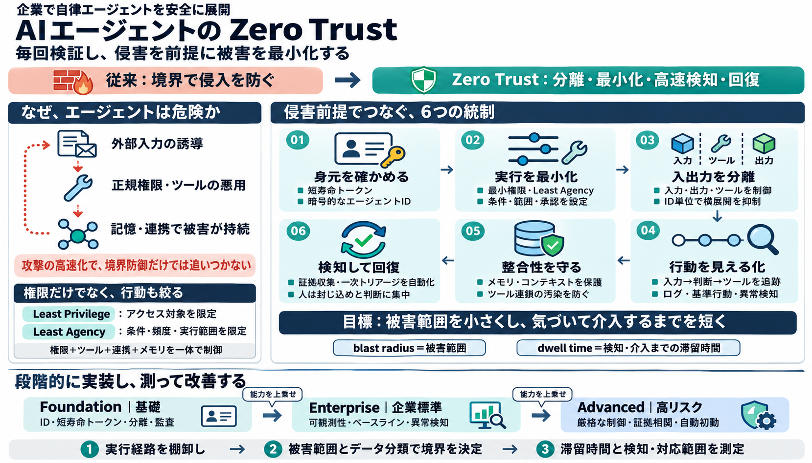

Zero Trust Architecture
to any architected networks but may require different mitigation techniques. • Section 6 discusses how ZTA tenets fit in…

to any architected networks but may require different mitigation techniques. • Section 6 discusses how ZTA tenets fit in…
The core purpose of Zero Trust Architecture (ZTA) is to enhance the way your organization approaches network and data se…
Zero Trust is "a collection of concepts and ideas designed to minimize uncertainty in enforcing accurate, least privileg…
Ever since NIST published NIST SP 800-207 in 2020, setting forth Zero Trust Architecture (ZTA) as a means to combat both…
"The Shadow Escape attack demonstrates the absolute criticality of securing MCP and agentic identities. Operant AI's abi…